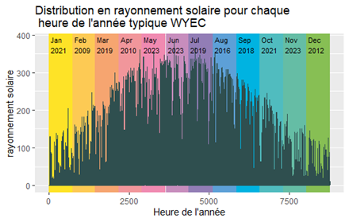
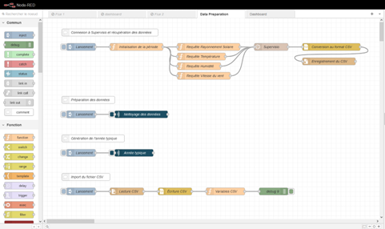
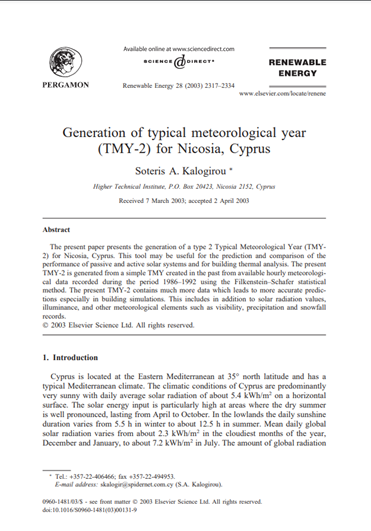

BUT2 Internship
For the second year of my Data Science course (BUT Science des Données), I had to do a mandatory 10-week internship. My internship took place at an INRAE research center (the French National Research Institute for Agriculture, Food, and the Environment) in Lusignan (FRANCE).
Since the 2000s, INRAE has been working and making research about agrivoltaics, which is a practice that combines farming with energy production by placing solar panels above the fields. As part of research in this field, my internship supervisor needed a way to create a single representative weather year from 15 years of weather data. Such methods exist for this purpose and are commonly called "typical meteorological years" (TMY).
My task was to understand those statistical methods and test them to find the best method. The goal of this internship was also to find out whether it made more sense to use a typical meteorological year, compared to simply averaging the data of the last 15 years to get the most representative year. The first two weeks of my internship focused on reviewing the scientific literature and gathering information on the methods to create typical meteorological years. Next, I had to write Python and R scripts to set up the chosen methods and produce metrics to compare them and check how accurate they were compared to the average. Finally, once the best method was chosen, I deployed it through a web interface using a low-code tool called Node-Red, to make it available to everyone and automatically update the data over time.
Skills learned:
- Deepening my knowledge of Python and R
- Managing and cleaning a large quantity of data
- Improving my coding skills
- Communicating within a company
- Using methods to generate typical meteorological years
- Building a dynamic, interactive web interface using Node-Red
- Writing an internship report
- Understanding the dynamics of the professional life within a company
Illustrations

Graph showing the solar radiation over a year for the WYEC method, a typical meteorological year

Overview of Node-Red, the tool used to created the website

First page of a scientifical article that I read to understand those methods